Piotrek
Kilka informacji o Piotrku – hobby, charakter, zainteresowania.


Filip
Filip to nasz niezastąpiony kierowca, pewna ręka, spokój pełna kontrola. Za kółkiem opanowany, zawsze na luzie, każdy czuje się bezpiecznie, nawet gdy pasy no cóż, w użyciu rzadziej niż prawo nakazuje W paczce wiadomo gdzie trzeba, tam dowiezie, bez gadania, bez mapy, nawet gdy pogoda nie dopisuje. A po drodze humor niezastąpiony tekst poleci co chwilę, bo Filip bez powiedzonka nie przejedzie nawet mili. „Nie mogę, odpisuję Julce” klasyk kultowy, „Kocham Julkę”, „Jestem z Julką” zestaw podstawowy. A gdy padnie: „Kaśka, zostaw, cycki Julki są moje”, Chichot idzie po aucie, choć Filip pełny powagi wypowiada te słowa każdy wie że w środku śmiech chowa Gdy Julka woła przeciągle: „Filiiiip!”, odpowiedź jest szybka zero pauz, zero lipy. „Też cię kocham” albo, całkiem na luzie: „Jak chcesz, to pojedziemy siku” romantyzm w stylu Filipa, w pakiecie z uśmiechem podany . Pantofel? Lepiej tak Nie mów bo się krzywi, choć każdy widzi, on się po prostu stara i nikogo to nie dziwi. Nie pod butem, nie na smyczy, bez dramatów na tytuł chłopaka Świata liczy Bo Julka to Julka tu nie ma dyskusji, Filip dla niej nawet chmury by spuścił. Gdyby mógł, jak Golden z Furiozy, bez wahania, kupiłby jej morze, zachód słońca i śniadanie z gwiazdką Michael do łóżka bez gadania złożył. Czasem się obrazi wtedy muzyka głośniej, gaz trochę mocniej, ignor dla świata, ale Julka zawsze na pierwszym miejscu w głowie. Jeden buziak, czasem dwa i po sprawie, foch znika szybciej niż korek, gdy Filip wybierze boczne drogi. Najbardziej go rusza, choć z przymrużeniem oka, gdy Kaśka Julkę łapie wiadomo gdzie, sytuacja już wcale nie zadziwiająca. Niby żart, niby śmiech, ale trochę go to grzeje, Najlepszy kierowca, jakiego znamy, i chłopak, co dba, byśmy wszyscy się śmiali. Paczka i Julka to jego misja, Filip za kółkiem to właśnie jego definicja.
 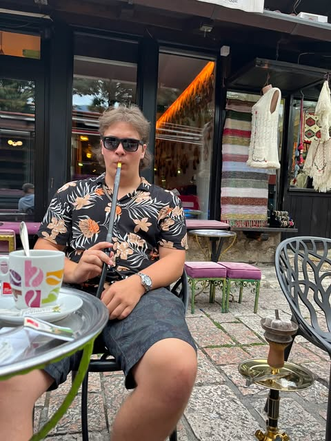
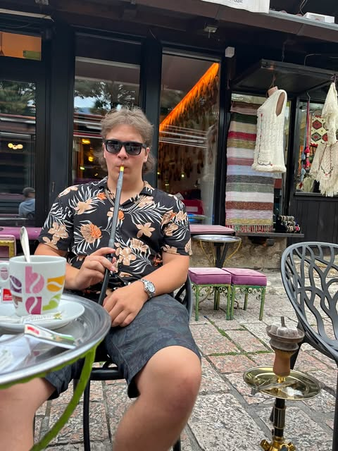
Julka
Kilka informacji o Julce.


 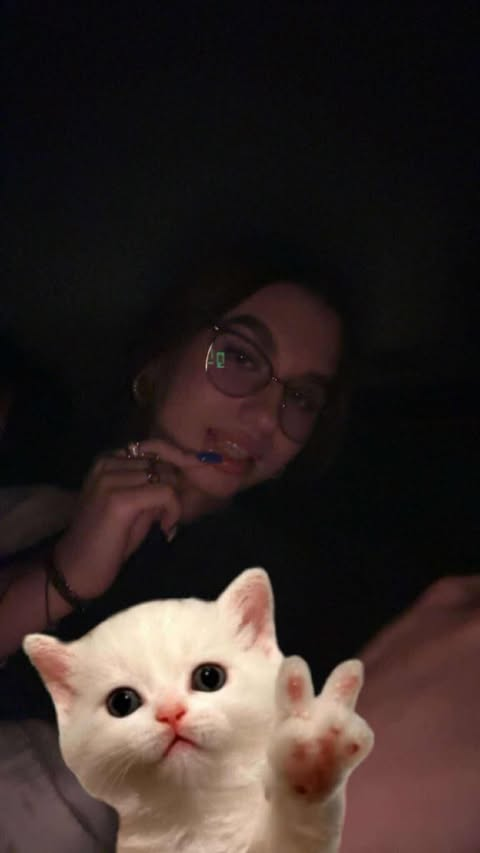
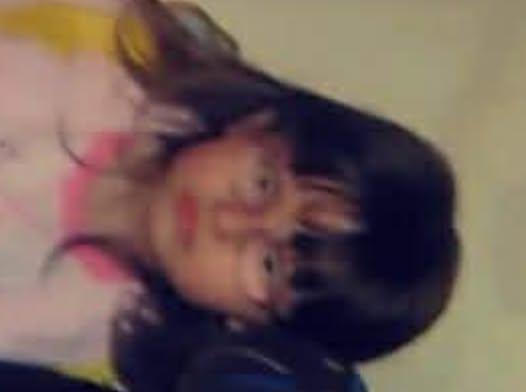
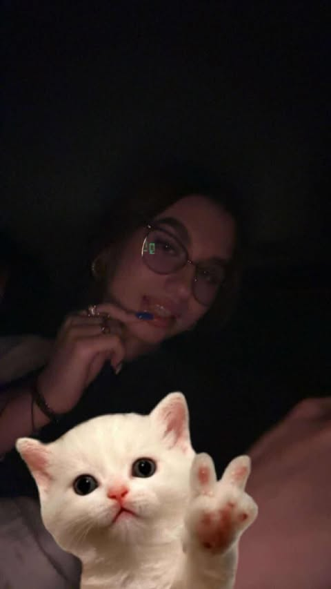
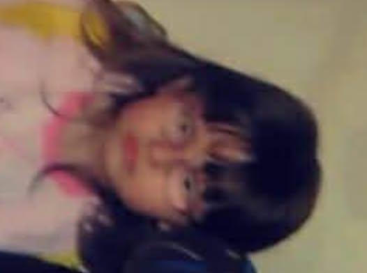
Szymon
Szymon to chodzący przykład stylu i perfekcji. Zawsze jest dobrze ubrany, a jego włosy i twarz są pod stałą kontrolą. Ma takiego fioła na punkcie fryzury, że poprawianie włosów to jego codzienny, automatyczny nawyk. W paczce jest znany z tego, że jest zabawny i wyjątkowy, nawet jeśli sam czasem udaje, że wcale mu nie zależy. Nie ma żadnych ksywek, bo Szymon to po prostu Szymon, marka sama w sobie. Lepiej jednak nie dotykać go po włosach ani po twarzy, bo to gwarantowany trigger, podobnie jak Kaśka, która potrafi wyprowadzić go z równowagi szybciej niż rozczochrana fryzura. Gdy się obrazi, przechodzi w tryb cichy. Siedzi, nie odzywa się, a na pytania odpowiada najwyżej krótkim „ok” albo kompletną ciszą. Zawsze, gdy wychodzimy razem, jego klasyczne pytanie brzmi: „Co, jedzenie?” jakby posiłek był najważniejszym punktem dnia. A gdy ktoś robi zdjęcia, Szymon prezentuje swoją ulubioną minę, w której stara się wyglądać jak sigma, ale każdy i tak się z niej śmieje, a i tak zwychodzi całkiem nieźle. Aktualnie kręci z Natalką, więc często można zobaczyć go wpatrzonego w iPhone, analizującego wiadomości jak strategię wojenną. Mimo że bywa gburowaty, wszyscy go kochamy, a od niedawna próbuje też swoich sił z alkoholem. Może nie dorównuje Piotrkowi i Kasi, ale spokojnie bedzie z niego ogier .
 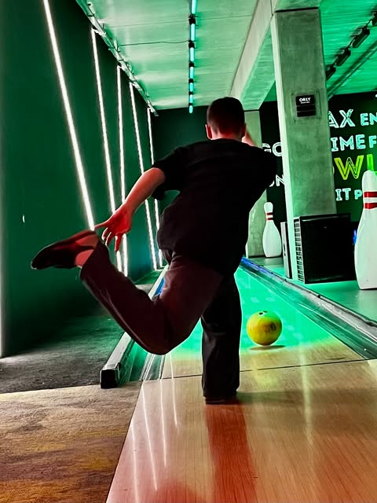
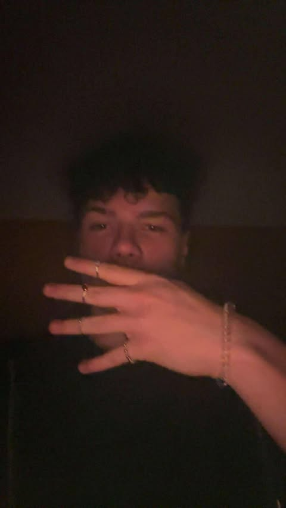
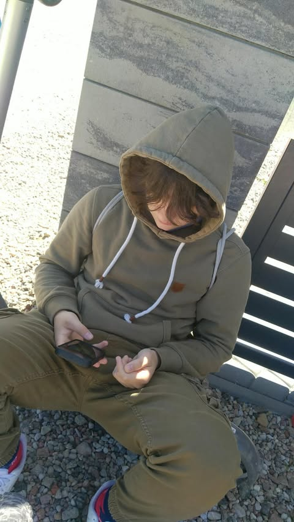
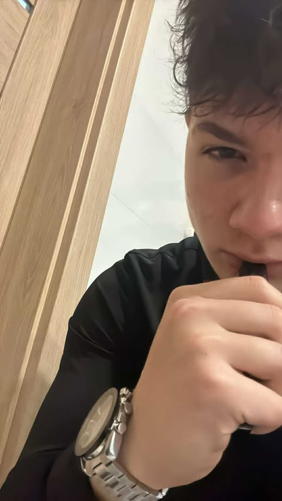
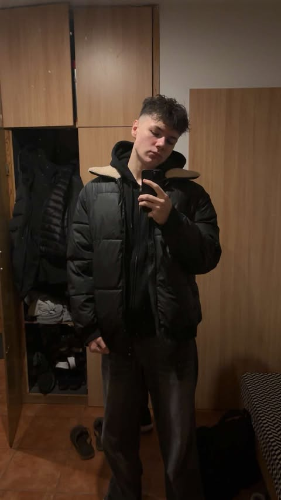
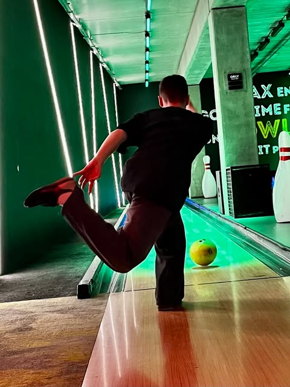
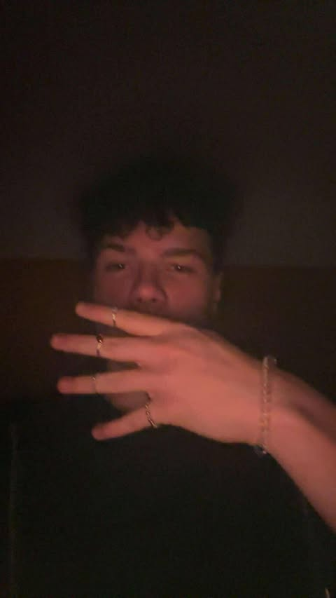
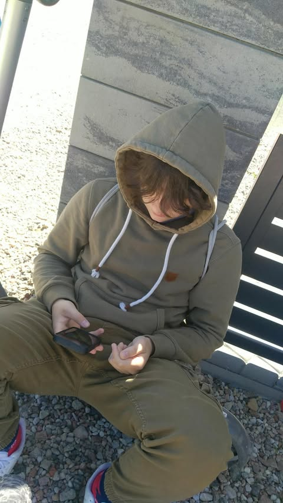
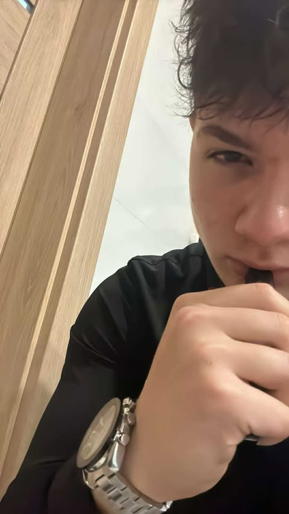
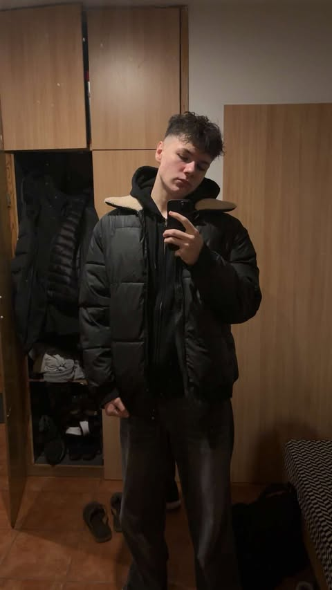
Kasia
Kasia w paczce znana jest z tego doskonale, że lubi sobie wypić i bawić się wytrwale. Gdy procent wchodzi w grę humor rośnie w sekundę, a Kasia potrafi rozkręcić każdą, nawet najcichszą rundkę. Najbardziej ją wkurza, gdy Julka mówi „nie piję”, bo przecież razem smakuje lepiej tak Kasia nam tłumaczy Druga sprawa: siostra, co każe wracać do domu, i psuje plan wieczoru bez żadnego kompromisu tonu. Nie ruszaj też jej elektryka ostrzegamy z troską, bo jak nie ma czym zapalić, to humor znika. To drobiazgi, ale każdy w paczce wie, że lepiej, gdy Kasia ma wszystko, co chce. Bo Kasia to dziewczyna, co pracy się nie boi, jako kelnerka lata, ogarnia, znosi i stoi. Zawsze daje z siebie wszystko, nie idzie na skróty, choć najbardziej ją boli, gdy my wychodzimy, a ona ma zmiany, dyżury i buty w gotowości. Jeszcze gorzej, gdy szef albo mama mówią „nie”, i cały plan imprezy nagle sypie się w tle. Wtedy Kasia wkurzona, ale dalej walczy o wcześniejsze z zmiany zwolnienie, bo jak już wyjdzie to nadrabia za wszystkie chwile stracone. Z Julką łączy ją historia trochę pokręcona, bo poznały się przez jej brata sprawa znana. Brat, chłopak los stanął w opiece zrobił swoje, a mimo to przyjaźń została i nigdzie oddalać się nie zamierza Dużo się wygłupiają, śmieją i kręcą tyłkami, a jak Julka jest z Kaśką to wszyscy dalszy przebieg już znamy: tylne siedzenia stają się parkietem do tańca, śpiew tak głośny, że auto prosi o litość bez szansy. Rozpychają się, machają, tańczą bez planu, znaki drogowe o łaskę błagają Filip na życzenie damy odpala kamerę cofania klasyk, a one robią show, które mogłoby przejść do kroniki życia. I choć czasem wkurzy, czasem narobi hałasu, to Kasia jest sercem imprezy, nie da się jej zgasić Zawsze częścią paczki, zawsze gotowa do akcji, bo gdy Kasia jest obok nuda nie ma racji. Jej energia, upór i odwaga sprawiają, że trudno ją przeoczyć wszyscy to znają. Jedno jest pewne, bez żadnych dyskusji: gdzie Kasia, tam humor zabawa i lejący się sam do gardła alkohol.
 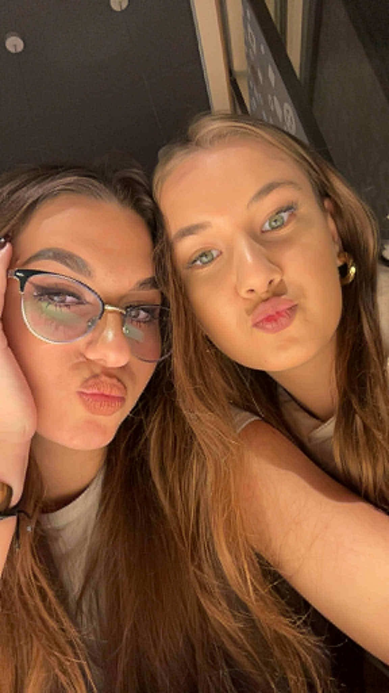
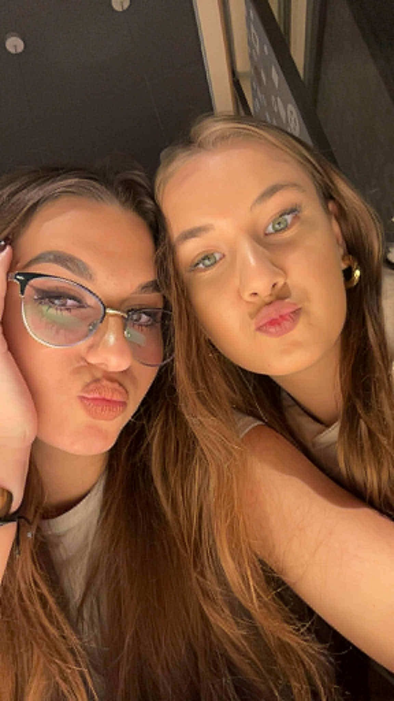
 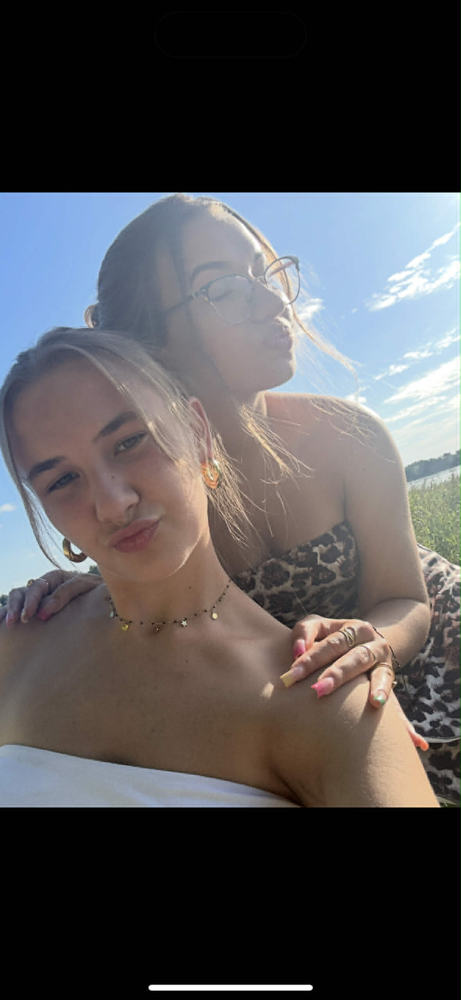
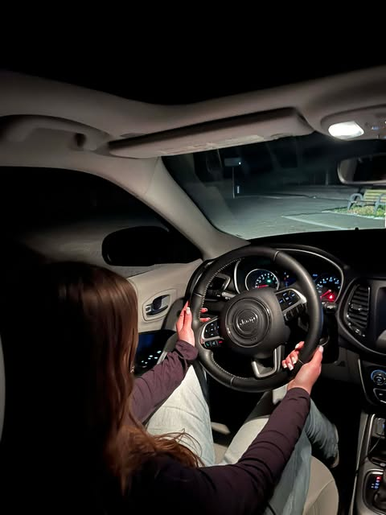
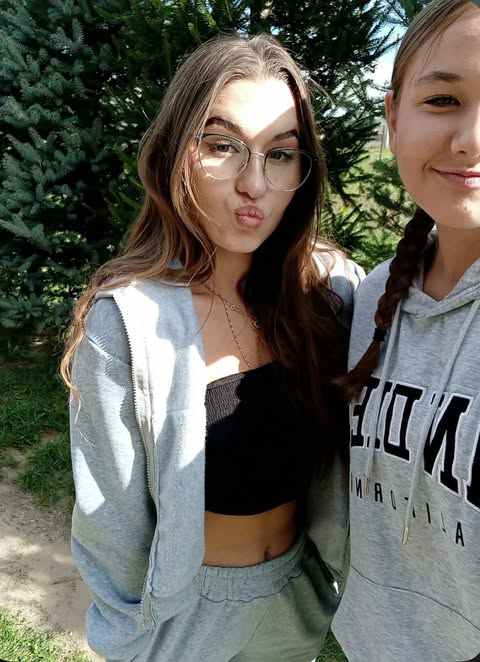
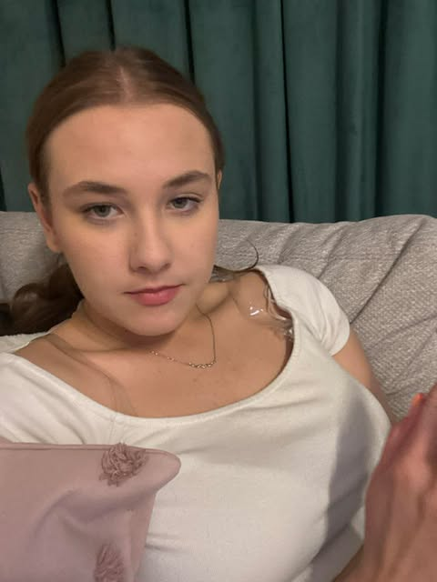
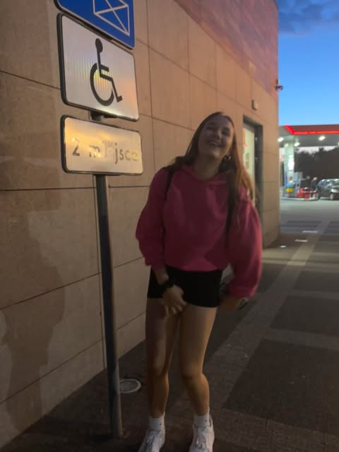
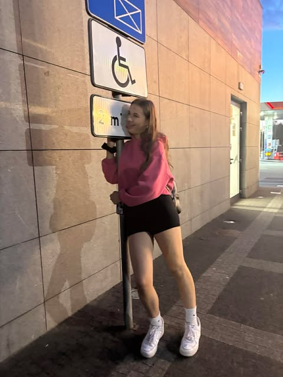
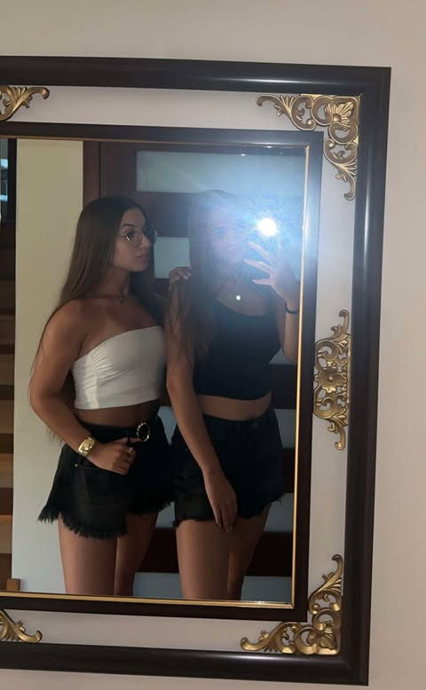
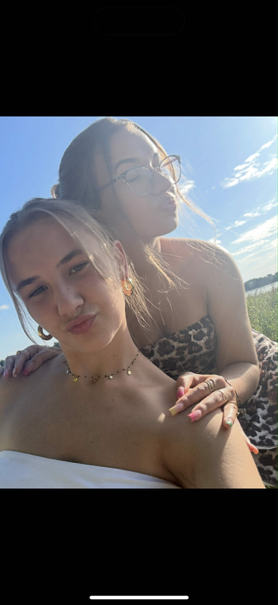
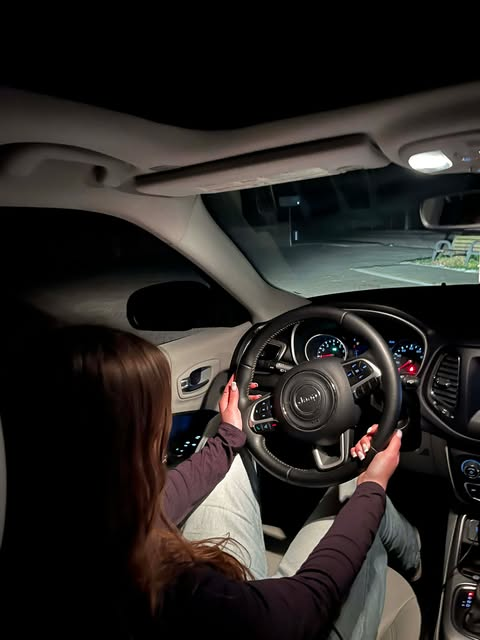
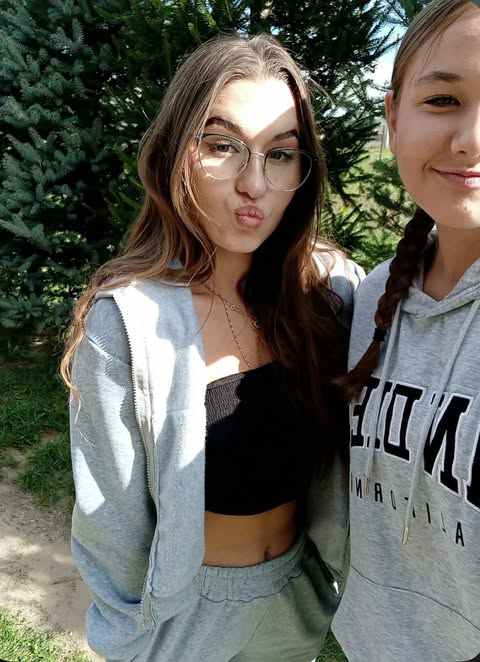
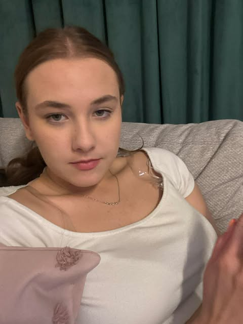
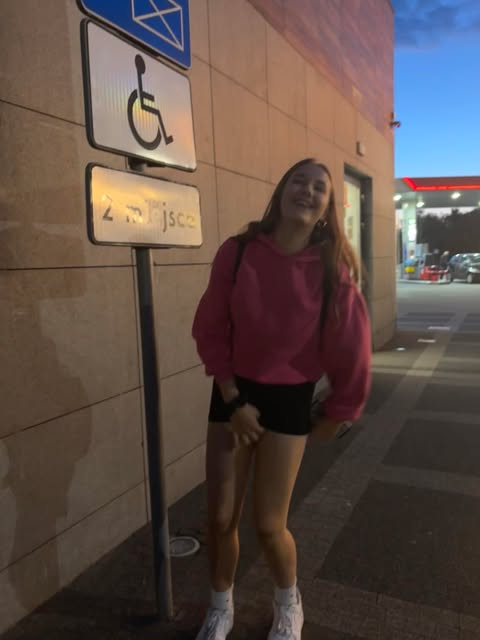
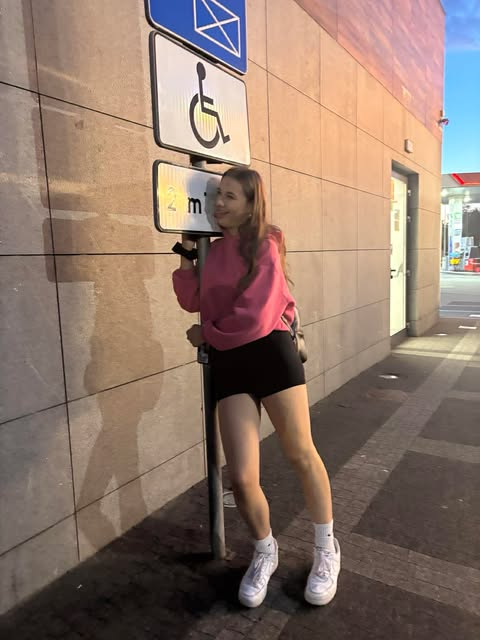
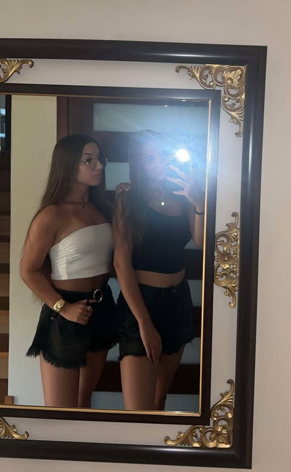